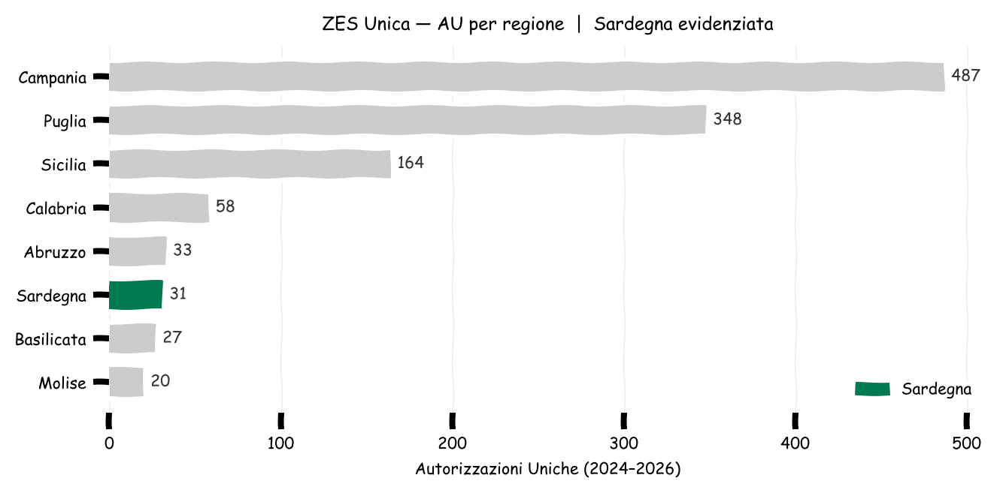
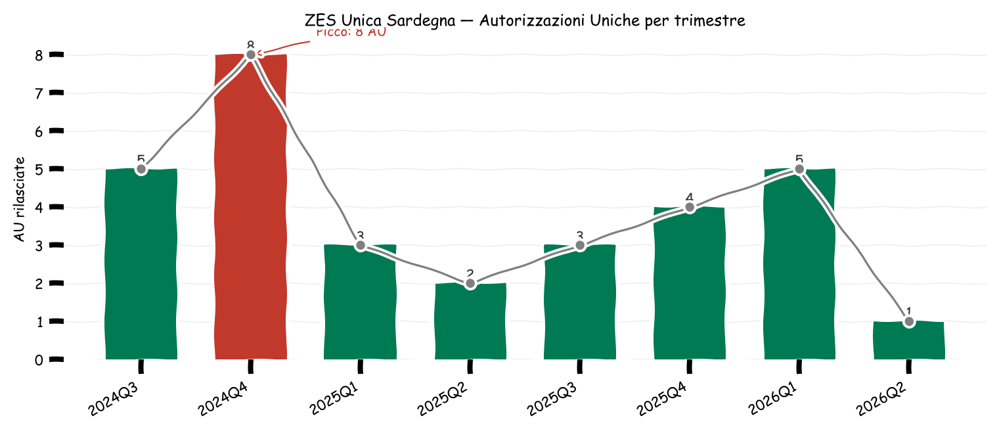
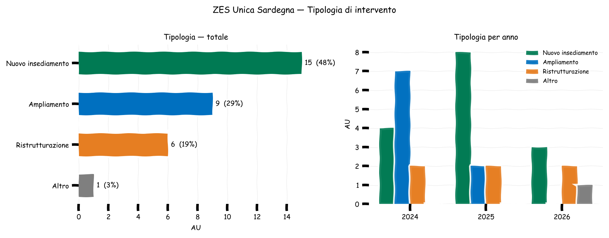
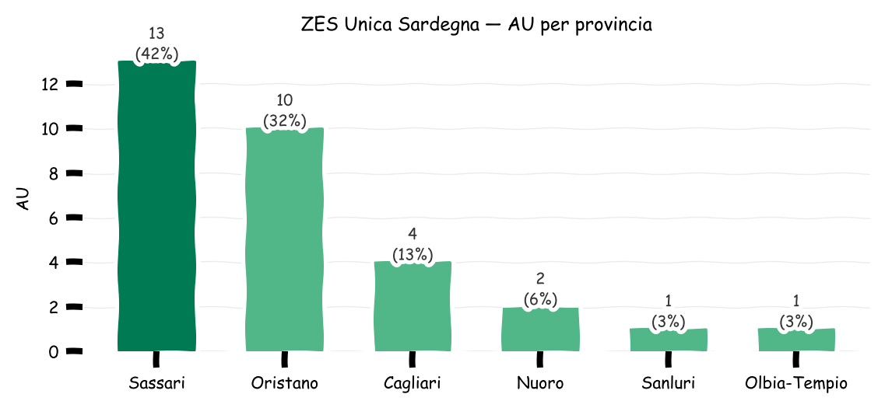
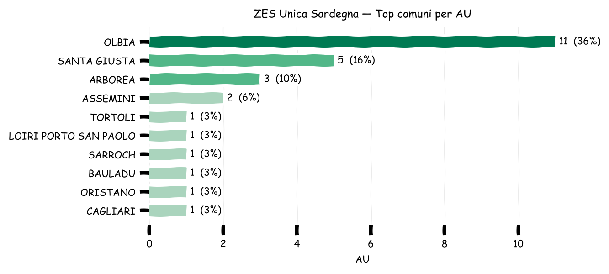
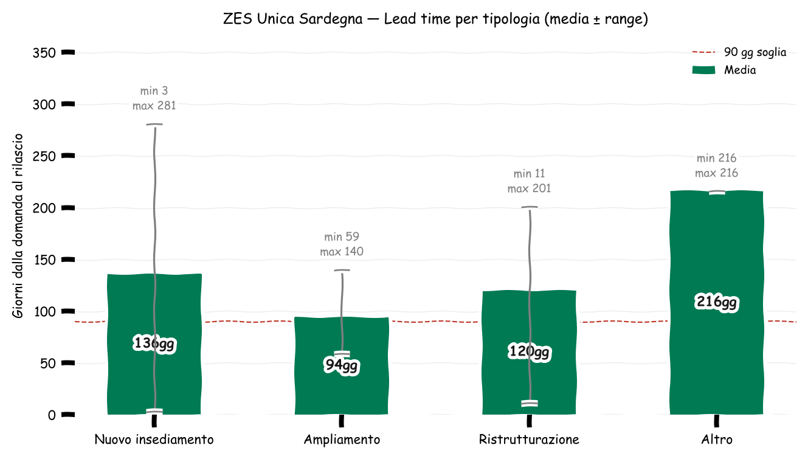

31 Autorizzazioni Uniche rilasciate a 23 imprese (1.35 AU/impresa)
Periodo: 2024-08-05 — 2026-04-02
Posizione nel Mezzogiorno: 6° su 8 regioni (2.7% delle AU totali ZES Unica)
Stato di avanzamento autorizzazioni uniche: domanda, lead time, distribuzione territoriale
Paolo Volterra ![]()
Analisi delle Autorizzazioni Uniche (AU) rilasciate dalla ZES Unica Mezzogiorno per la Sardegna, con riferimento al periodo agosto 2024–aprile 2026. Il documento copre: posizionamento della regione nel contesto del Mezzogiorno, andamento trimestrale delle AU, distribuzione per tipologia di intervento, concentrazione geografica provinciale e comunale, tempi medi di lavorazione e imprese beneficiarie ricorrenti.
ZES, Sardegna, Mezzogiorno, autorizzazioni uniche, investimenti
La ZES Unica Mezzogiorno è operativa per la Sardegna dall’agosto 2024. Le Autorizzazioni Uniche (AU) sono il principale strumento di semplificazione procedurale: sostituiscono tutti i titoli abilitativi necessari per realizzare nuovi investimenti o ampliare attività esistenti nei comuni ZES.

| Regione | AU | Imprese | % AU |
|---|---|---|---|
| Campania | 487 | 411 | 41.7% |
| Puglia | 348 | 268 | 29.8% |
| Sicilia | 164 | 125 | 14.0% |
| Calabria | 58 | 46 | 5.0% |
| Abruzzo | 33 | 28 | 2.8% |
| Sardegna | 31 | 23 | 2.7% |
| Basilicata | 27 | 25 | 2.3% |
| Molise | 20 | 15 | 1.7% |

Il grafico mostra la distribuzione trimestrale delle AU. Il picco si registra nel Q4 2024, fase di avvio operativo della ZES Unica. Il 2025 mostra un ritmo più regolare (2–4 AU/trimestre); il Q1 2026 segna una ripresa comparabile al picco iniziale.

| Tipologia | AU | % sul totale |
|---|---|---|
| Nuovo insediamento | 15 | 48.4% |
| Ampliamento | 9 | 29.0% |
| Ristrutturazione | 6 | 19.4% |
| Altro | 1 | 3.2% |
La categoria Nuovo insediamento è la più frequente, ma va letta con cautela: include sia investimenti greenfield che l’apertura di nuove unità locali da parte di soggetti già operativi nella regione. La concentrazione dei richiedenti in soggetti con più AU e radicamento territoriale preesistente (vedi sezione “Imprese ricorrenti”) suggerisce che una parte rilevante delle pratiche riflette attività ordinaria canalizzata sulla struttura unica, più che nuova domanda esogena di insediamento. Il mix tra tipologie varia anno su anno: nel 2024 gli ampliamenti erano dominanti, nel 2025–2026 i nuovi insediamenti accelerano.


| Comune | AU | Imprese | % AU |
|---|---|---|---|
| OLBIA | 11 | 8 | 35.5% |
| SANTA GIUSTA | 5 | 3 | 16.1% |
| ARBOREA | 3 | 2 | 9.7% |
| ASSEMINI | 2 | 2 | 6.5% |
| TORTOLI | 1 | 1 | 3.2% |
| LOIRI PORTO SAN PAOLO | 1 | 1 | 3.2% |
| SARROCH | 1 | 1 | 3.2% |
| BAULADU | 1 | 1 | 3.2% |
| ORISTANO | 1 | 1 | 3.2% |
| CAGLIARI | 1 | 1 | 3.2% |
| TORTOLÌ | 1 | 1 | 3.2% |
| SARDARA | 1 | 1 | 3.2% |
La concentrazione su Olbia (35% delle AU) e sull’asse Oristano-Arborea-Santa Giusta (area agroalimentare, cooperativistica e portuale) delinea due cluster di attivazione della ZES: il Nord-Est (logistica e terziario) e il Campidano settentrionale (industria agro-food).

| Tipologia | Pratiche | Giorni medi | Min | Max |
|---|---|---|---|---|
| Nuovo insediamento | 15 | 136 | 3 | 281 |
| Ampliamento | 9 | 94 | 59 | 140 |
| Ristrutturazione | 6 | 120 | 11 | 201 |
| Altro | 1 | 216 | 216 | 216 |
| Totale | 31 | 123 | 3 | 281 |
Imprese che hanno ottenuto più di una AU nel periodo:
| Impresa | AU | Prima | Ultima | Comuni | Tipologie |
|---|---|---|---|---|---|
| COOPERATIVA PRODUTTORI ARBOREA -SOCIETA’… | 4 | 2024-10-09 | 2026-04-02 | ARBOREA, SANTA GIUSTA, SARDARA | Ampl., Nuovo, Riconversione, Nuovo |
| PASTIFICIO F.LLI CELLINO SRL, Soc a… | 3 | 2024-11-28 | 2026-01-13 | SANTA GIUSTA | Ristr., Nuovo, Ristr. |
| ELICAPITAL SRL, Soc a responsabilità limitata | 2 | 2024-09-26 | 2025-09-19 | OLBIA | Nuovo, Nuovo |
Le 3 imprese ricorrenti concentrano 9 AU su 31 totali (29%). Il soggetto più attivo è COOPERATIVA PRODUTTORI ARBOREA -SOCIETA’ AGRICOLA (4 AU su ARBOREA, SANTA GIUSTA, SARDARA). La presenza di imprese con pratiche multiple su comuni diversi è più coerente con la canalizzazione di richieste amministrative ordinarie verso lo sportello unico che con piani di espansione genuinamente nuovi: i beneficiari ricorrenti sono operatori già radicati nel territorio regionale.
Fonte dati: Sportello Unico Digitale per le Autorizzazioni — ZES Unica Mezzogiorno.
Copertura temporale: autorizzazioni con data di protocollo compresa tra agosto 2024 e aprile 2026. Il dato 2026 è parziale (Q2 2026 incompleto).
Lead time: calcolato come differenza in giorni tra data presentazione domanda (colonna IN) e data protocollo (rilascio AU). Esclude le pratiche con data assente o con data protocollo antecedente alla domanda.
Normalizzazione comuni: i nomi dei comuni sono stati normalizzati in maiuscolo (UPPER(TRIM())) per evitare duplicati da variazioni di grafia.
Composizione investitori: tutti i richiedenti presentano CF italiano — ma questo non implica assenza di investitori esteri. La AU ZES presuppone un progetto localizzato nell’area (insediamento, ampliamento, attività produttiva/logistica/industriale) e quindi un radicamento operativo in Italia, che normalmente si traduce in una entità giuridica italiana (filiale, stabile organizzazione, società veicolo). Per identificare l’eventuale origine estera del capitale controllante servirebbe l’accesso al Registro Imprese (quote societarie) o a database di proprietà societaria (es. ATOKA, Orbis). Unico caso con possibile nesso industriale di rilievo: Sardhy Green Hydrogen Srl (Sarroch, area industriale Saras/ENI).
AU ZES ≠ credito d’imposta ZES: l’autorizzazione unica è uno strumento di semplificazione procedurale (sostituisce i titoli abilitativi multipli). Il credito d’imposta per investimenti in beni strumentali (art. 16 D.L. 124/2023) è agevolazione fiscale distinta: l’accesso alla AU non è presupposto per fruirne, e viceversa.